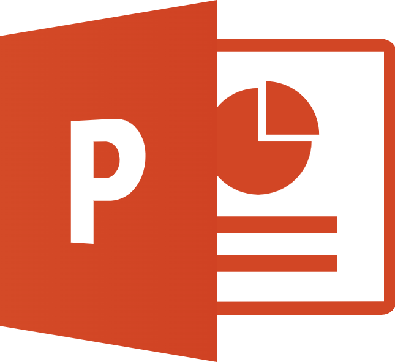

Material complementario
En esa sección encontrará recursos donde permitirá extender lo aprendido y que servirá para fortalecer el nivel de competencia adquirida.
 |
|  |
Como aprender PowerPoint rápidamente -Guía completa para principiantes |
 |
Curso de Access 2016 -Aulaclic Uso de Excel y Access para el desarrollo de aplicaciones administrativas empresariales |
|
Generalidades de la seguridad informática Delitos informáticos y Terrorismo Computacional La información como objetivo de los delitos informáticos y el terrorismo computacional. |